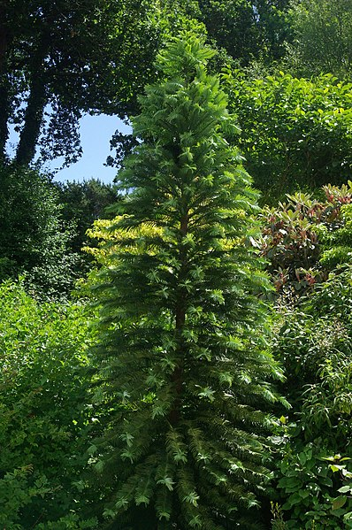
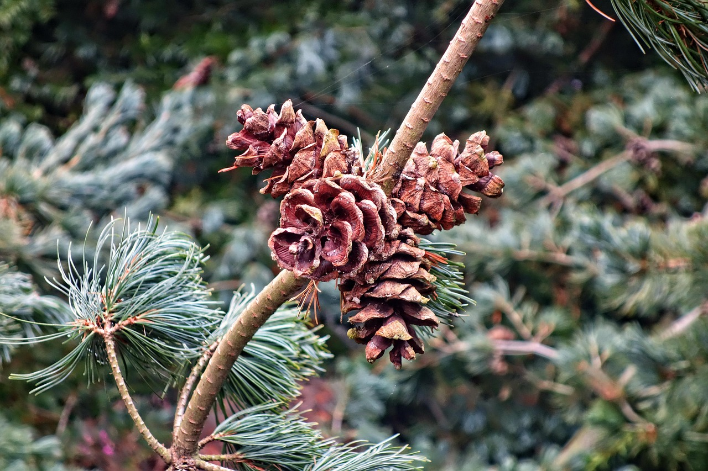
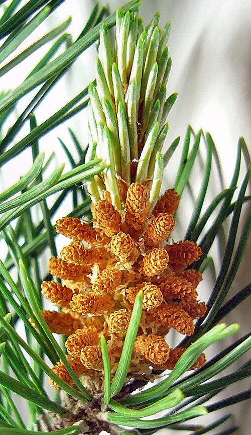
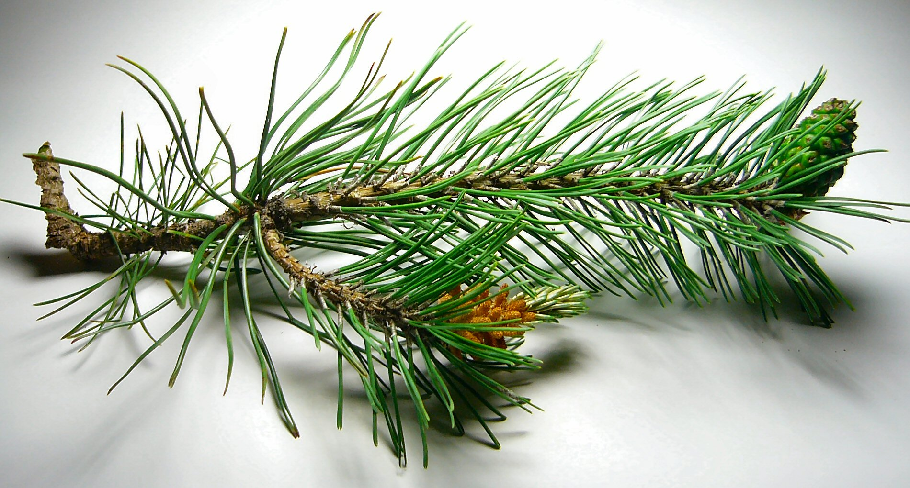

LES CONIFERES : POLLEN ET GRAINES NUES
Les conifères (Gymnospermes). Premières plantes à produire du pollen et des graines « nues » (non enfermées dans un fruit, souvent portées par des cônes), s'affranchissant ainsi de l'eau pour la fécondation




Appareil végétatif : arbres au bois solide, racine profondes, feuilles en aiguilles et résine protectrice.
Reproduction : le pollen, porté par le vent, atteint l’ovule : la fécondation se passe d’eau. La graine "nue" n’est pas protégée par un fruit. Premières graines vers 370 Ma, au Dévonien.